After reading the quarterly magazine that I get for being a donor to the Dutch branch of the World Wildlife Fund (WWF) I suddenly wanted to make a visualization that related somehow to something that the WWF might do. I "pitched" the idea to Shirley and it was some back and forth on what more general topic would work for both of us. But then Shirley found her angle, the data visualization survey that had just come out, which gave us our topic of "community".
At the start of April I asked twitter for help on datasets that one might associate with the WWF and got a whole lot of links (thank you very much dear followers!). However, due to being in the US the entire month doing conferences & meet-ups, and creating the presentation that Shirley and I had to make for OpenVisConf in Boston on April 24th (which was another amazing conference!), I didn't get to do anything with the links until I was waiting at the gate of my flight back home to Amsterdam on April 26th.
I received a lot of tracking data links, either animal or buoy in the water. But what I noticed was that the search functionalities of these data repositories is rather aimed at researchers. I could search datasets based on the id of a paper or name of a scientist. But I couldn't request all tracking data of, say, whales... Another type of dataset that was very prevalent were the choropleths, filled regions on a map, representing things such as protected areas, or animal habitations zones.
I started to meander through the links, going down the "Earth" related datasets, and I don't know how I got there, but at some point I found myself on the website of NOAA STAR, the Center for satellite applications and research. Again, just clicking around, and then I came across an image of the Earth, colored by vegetation health. 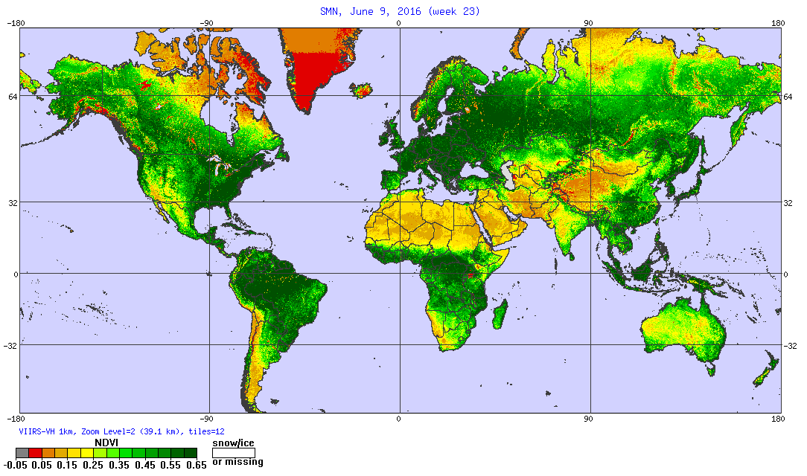
And they had a map like this for every week in the year of 2016. There was also an option that showed all the maps in a very rough animation (as in, going through 52 images within a minute or two). Even though the animation was crude, and the color palette, well, not optimal, I really liked seeing the changes of vegetation health throughout the year. I wanted to visualize the same thing, but do it in my own style. To show a continuously "breathing Earth". Furthermore, after seeing what Dominikus Baur did with the Pixi.JS library while we were both presenting at the INCH conference last March, I knew I wanted to try it out as well. I just needed a project where I wanted to visualize a lot of points. And this idea seemed like the perfect opportunity to give Pixi a try, since there are often thousands if not millions of "pixels" in an image.
I was very happy to see that STAR also shared the data behind the images. However, I had never worked with these levels of sophisticated geo-data before; hdf and GeoTiff files. Thankfully, I had just seen the wonderful presentation of Rob Simmon on GDAL (the Geospatial Data Abstraction Library) and according to Google GDAL should be able to open these kinds of files. I followed the quick and hassle free installation steps as outlined in Rob's blog. However, instead of trying to parse the files in the command-line, which Rob's talk was about, I of course took to Google again to see if there was an R package instead. And of course there was! The appropriately named rgdal.
After also getting rgdal to work (you can read my steps at the top of this R file), my next few hours were filled with understanding how to read in a GeoTiff file, what it contained, how I could play with it and finally how I could map it (& how to switch map projections!). My first goal was to recreate one of the images from the STAR website, so I knew I had done and understood the steps to get to that point. It took about 6-8 hours, but I have to admit, even with the sub-optimal color palette, I think the image below is just amazing in its detailed nature (just check out the bigger version by clicking on the image below).
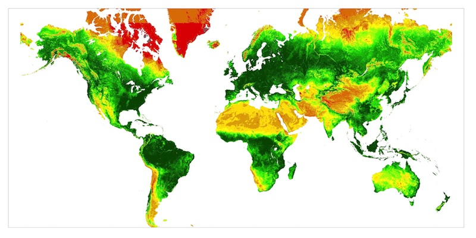Great, but these images were about 22 million pixels/datapoints, per week! There was no way I could load that amount of data into the browser, and do that 52 times. I therefore had to create lower resolution files. I did some tests and eventually reducing the resolution to about 50 000 (non-water representing) pixels looked like a good middle ground. Small enough for WebGL to handle, but high enough to still being able to see interesting details.
As a note to somebody who I had this particular talk with: Yes, I could've made many highly detailed images and then turned these into a mp4 movie. Maybe that would've given the smallest file size with the highest resolution. But! That wasn't my goal this month! I wanted to learn something completely new; WebGL (or libraries build on top of WebGL) and this seemed like a good, but interesting starting project. Therefore, out of a purist approach, I wanted the eventual visualization on my screen to consist of actual numeric data read in and then made visual as thousands of small circles.
My next challenge was to think of a way to save the data in the smallest file(s) as possible. Even 52 weeks of 50.000 datapoints each week is going to take a several megabytes. During my time trying to understand the file & data I noticed that > 90% of the weeks contained exactly the same number of datapoints. After some more investigation I saw that the x and y locations of these points were exactly the same. The first four weeks in the year had missing data, but they didn't contain any x-y locations that weren't in the other 48 weeks. I therefore made a separate file containing the x and y variable, and 52 separate files only containing 1 variable; the level of vegetation health. The row number would then connect the vegetation health value to the correct x and y location on the map. This made the file size of 1 week (i.e. 50.000 values) about 250 kB (I also checked out gzip'ing the files, but I couldn't find a way to then unzip them in the browser. Sad, because the files were reduced to only 35 kB)
I started out getting the data on the screen with HTML5 canvas. I knew that D3's standard approach of SVGs was definitely going to fail here, since I also wanted to implement transitions, so I didn't even try that. Thankfully, canvas being quite straightforward (in my opinion), having done a few other projects in canvas over the past year (like February's Marble Butterflies), and only wanting to plot circles at certain locations, I got that working for 1 map/week's worth of data quite easily. Below are some steps in the process; first just the circles in the right location (all having the same size and color, but differing opacity); adding colors; adding a multiply blend mode and different circle sizes.
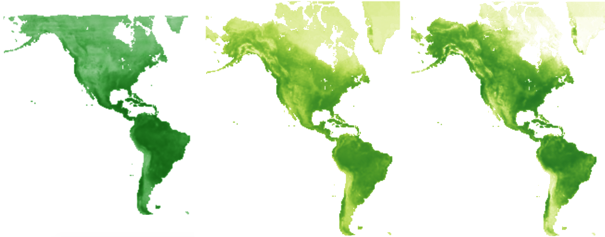I then made a simple interval function that would switch between the 52 maps as fast as it could. So not even animating the whole! And as expected, that took about 1-2 seconds per map. Definitely not a "frame rate" that I could use for natural looking animations.
Therefore, I dove into PixiJS. I opened up a whole bunch of examples, especially those that I could find on blockbuilder.org, combining d3 with Pixi, like this one by Irene Ros. Let me spare you the details of the code, in short, it was surprisingly easy to pick up (especially compared to regl and WebGL that I went into later o_O). However, there were some weird pixel rounding "things" going on...

And it was slow...
I couldn't really find a solution to making Pixi faster for my specific case through Google, so I did the next best thing; I asked it on Twitter
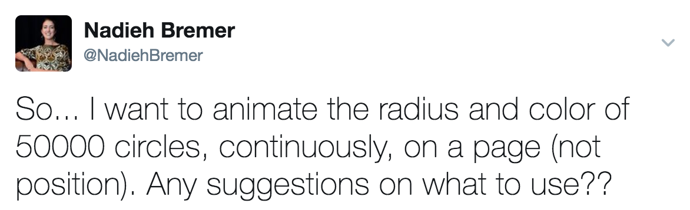And damn, I was so amazed by all of the people providing ideas! Even when I explained more, or asked more, practically all would reply and even share some sandbox examples :D I had several conversations going on, some of them focusing on using regl or three.js, but I also got some interesting ideas on Pixi. For example, I learned that to get the fastest performance of Pixi (even when it uses WebGL) is to use something called "Sprites". You can sort of see this as small "images". This example with bunnies shows it quite well, you can have hundreds of thousands of the same 5 "bunny" images bouncing around. Or this example with the same green square png moving around. But I didn't have images, I had thousands of slightly different circles. But then I got the following tweet from Matt DesLauriers
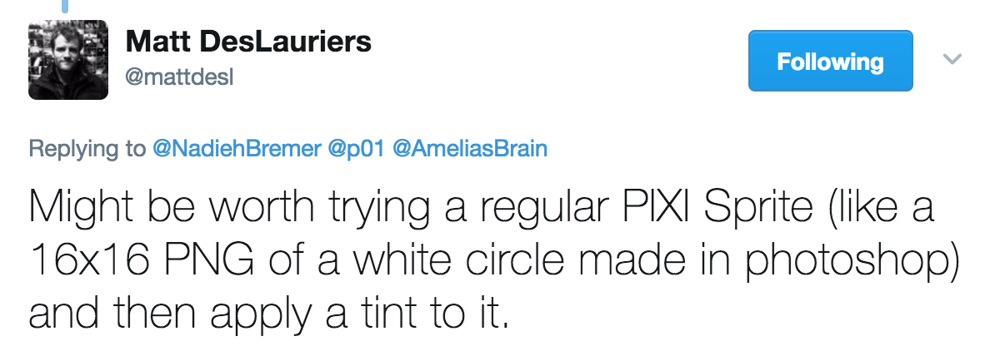Which I tried and it worked and it seemed fast enough! However, when you looked closely the circles weren't very circular. They looked rather pixelated...
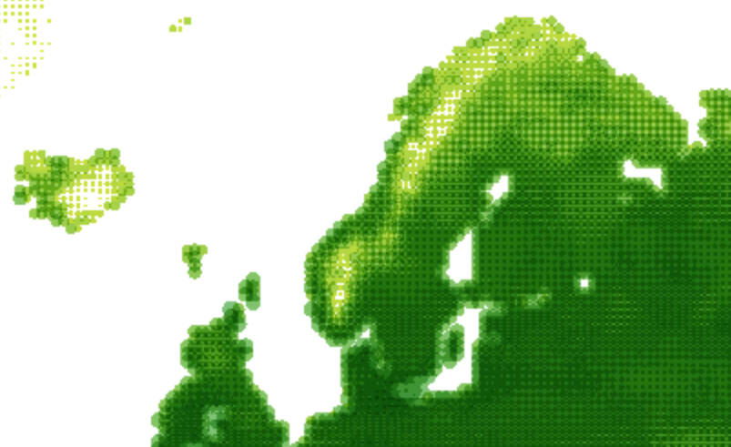And that's when I decided to give regl a try. Especially after Peter Beshai uploaded this block that animates 100.000 points with regl (which is also mesmerizing to look at). A bit later Ricky Reusser send me the same demo, but coded slightly different, for those interested.
At first I hoped to get the hang of regl by going through the above (and other) examples. But after an hour or so I acknowledged the fact that I really didn't understand anything yet and that I had to read some introductions to WebGL, GLSL and shaders, hehe 😅 - It took a while, but my brain slowly started to wrap it's head around the concepts of shaders, fragments, vertices, attributes, uniforms and varyings (some sites that helped me 1, 2, 3, 4 and of course the Book of Shaders (although I only skimmed through the first 2 chapters)).
I started out with this very simple example block by Adam Pearce which creates a triangle. I then slowly starting adjusting it, relying heavily on Peter Beshai's block, to show circles on a map. Some things could stump me for quite some time, like opacity not acting like I expected (lower left image)...
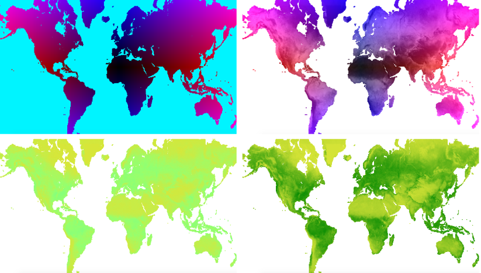It wasn't only Pixi that had it's difficulties in placing the circles on the map without strange effects. I got the below interesting circular-ish pattern in regl at some point. I eventually fixed the whole issue by making sure the size of the map would be an exact multiple of the number of points in both the horizontal and vertical direction.
Well, it took a lot of browsing through example code, but eventually I had a map in regl with circles and opacities (although no "multiply" blending going on, I didn't yet know how to get that working). But again, if I zoomed in, I saw the same pixelated effect, AARGH! And here I was really hoping that regl would not have the same issue as Pixi... I did notice that it was slightly faster in rendering than Pixi though.
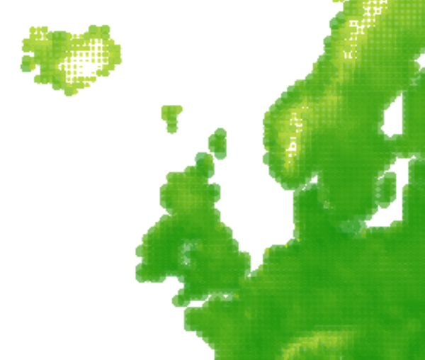While trying to find info on getting anti-aliased circles in regl I came across a snippet that showed that Pixi actually has an "anti alias" setting! And not long before, Alastair Dant made this animated Pixi example that I tested with 50.000 circles which still seemed to work smoothly. These two interesting avenues to explore brought me back to my Pixi based map.
Btw, at some point during the data preparation I made a big change in how I saved the final files. However, I made an error, which gave the result below where the locations are randomly shuffled, oops... Not such an interesting map anymore 😅
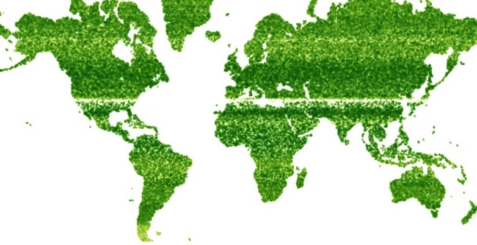Another hour or two of work adjusting the example by Alastair to my data, playing with some anti-aliasing things and I was finally looking at a smoothly changing map, YAY!
After I got Pixi working I started another Twitter request to help me with the anti-aliasing and "multiply" blend mode in regl (because I had noticed before that regl was faster than Pixi, so I wanted to give it another try). It wasn't long before Yannick Assogba send a block that was a remix on Peter Beshai's version, but then with circles instead of squares. And Alastair helped out again by making a block that animated a lot of circles using ReGL with anti-aliasing (looking amazing btw!). And a day before Robert Monfera had send a block showing how to transition between anti-aliased shapes in regl. These examples increased my understanding of how to tackle the anti-aliasing, which eventually led me to this blog that worked perfectly in my map. Look at those nice circles (even after zooming in):
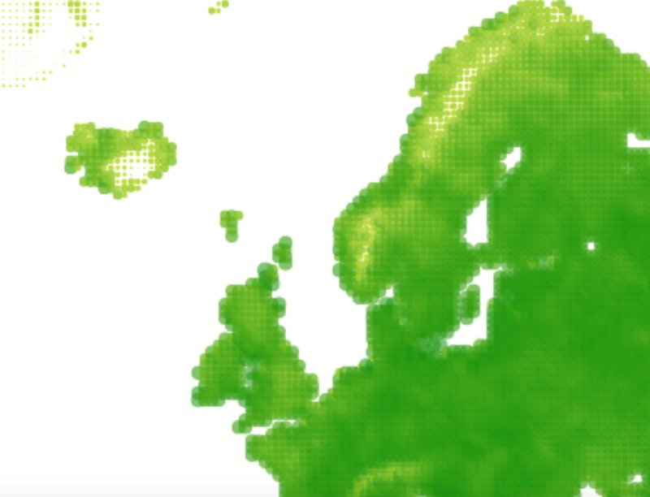Check! That only left the "multiply" blending that was missing from the the regl version. But that turned out to be one step too far. After a Twitter chat with Robert Monfera I had a collection of websites about WebGL blending functions, premultiplied alpha (don't ask...) and some Pixi source code files (Pixi was able to do multiply in WebGL, so maybe I could find a clue there). I was very surprised that I could not find a single example of a multiply blend in WebGL through Google (where the multiply was based on many elements overlapping, not just two predefined images). And I guess I shouldn't be surprised that I couldn't figure it out either, having only started learning about shaders 2 days before, hehe. I did get a lot of interesting other color combinations :) Well, actually I did get one result where multiply was working (top right image), but I could not combine that with opacity/circle shapes (which, more than 2 days ago, I would've thought was weird, "opacity is separate from color right?"... well no, not quite in WebGL I've since learned). For those interested, these sites really helped me to understand the different blending functions: 1, 2, and a blending example by Alistair.
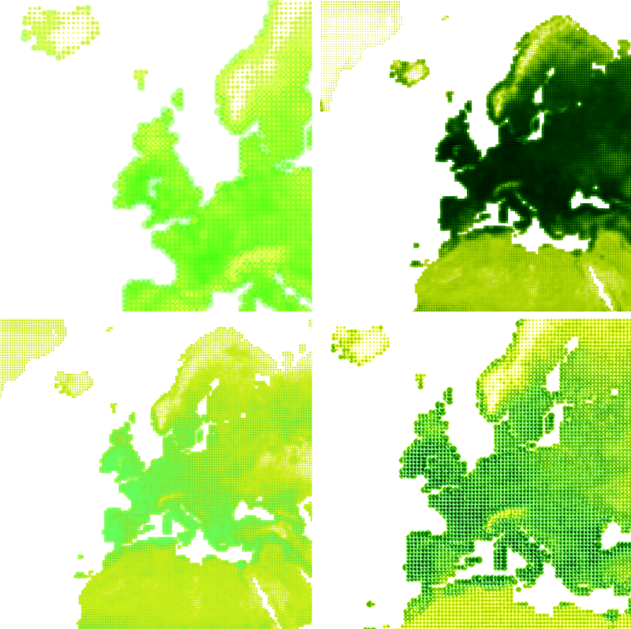Eventually I had spend enough time experimenting with the blending and I wasn't making progress anymore. I therefore decided to leave it without any blending. The Pixi version was therefore going to be my "main" project version. However, since I had the regl version animating perfectly fine I decided to clean up the page; better color palette, adding titles and such, and link to it from the eventual main page. That way people could compare the different tool-based versions :)
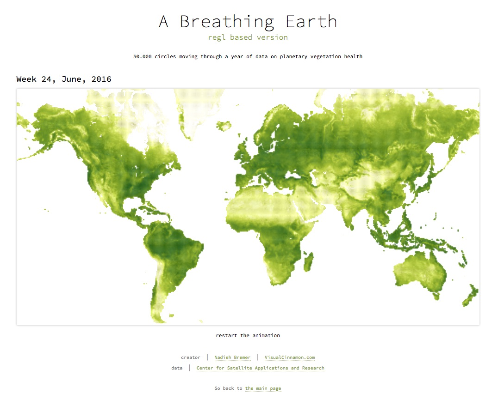I had learned many things while going through all the wonderful examples people had send me. I therefore returned to the canvas version to see if I could make it faster. After a bit of messing around, I managed to get it to switch between maps every 0.5 seconds, but that is still too slow for a smooth animation (nonetheless, I also cleaned up that version and added it to the main page for comparison).
Having chosen the regl library to work with WebGL I decided not to go into ThreeJS as well. It was just too much to handle in one week, so many new programming libraries, hehe. Nonetheless, I still want to share these 3 examples that show the concept of changing circles that were send to my through Twitter: a block with 50.000 circles animated with WebGL custom made by Robin Houston and two codepens with 50.000 animated circles, one using circle "pentagons" in ThreeJS and another version using DataTextures in ThreeJS both custom made by Matt DesLauriers.
Yes, this was a very technical "month" for me. I haven't learned so many new (coding) languages within a week, since, well, maybe ever. And I couldn't have done it without the help of a lot of people. I would specifically like to thank Robert Monfera, Matt DesLauriers, Alastair Dant, Peter Beshai, Ricky Reusser, Yannick Assogba, Robin Houston, Amelia Bellamy-Royds, Jan Willem Tulp, Mike Brondbjerg, Paul Murray, and Mathieu Henri who have all helped me in different areas of either PixiJS, regl, ThreeJS and more. I don't think I would've been able to get my map(s) working without the ideas and examples they shared. THANK YOU!
{kind=link}
{kind=link}
{kind=link}
{kind=link}
{kind=link}
{kind=link}
{kind=link}
{kind=link}
{kind=link}
{kind=link}
{kind=link}
{kind=link}